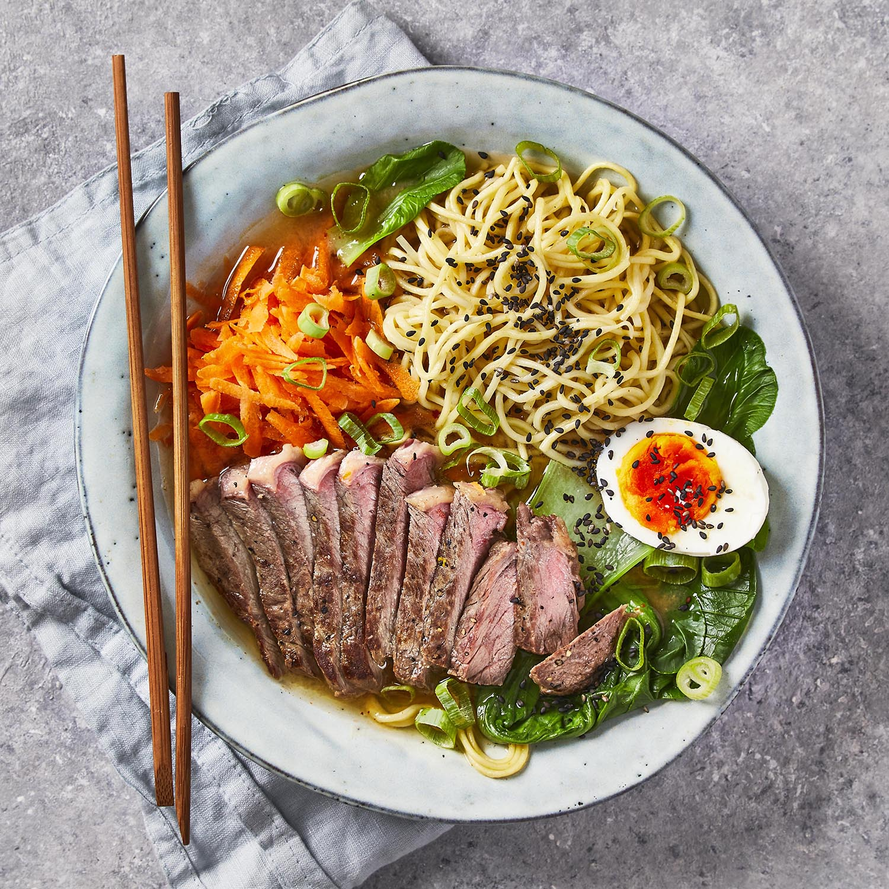

Steak Chilli Miso Ramen

Spicy miso ramen paired with british steak, finished off with a soft-boiled egg
Miso Ramen is a noodle soup of Japanese origin. Its broth is made from miso (a traditional Japanese seasoning), and is usually paired along with chicken stock, vegetables, and ground pork.
Few dinners can beat a steaming bowl of Japanese-style noodles in homemade ramen broth. You'll top this comforting bowl with juicyBritish rump steak and a soft boiled egg to serve.
Ingredients
- 1 tsp chilli flakes
- 2 medium egg noodle nests
- 2 x 150g British rump pavé steak
- 2 spring onions
- 15g fresh root ginger
- 2 tbsp white miso paste
- 15ml rice vinegar
- 5g black sesame seeds
- 2 garlic cloves
- 200g pak choi
- 8ml soy sauce
- 1 British free-range egg
Instructions
Boil a kettle
- Add the egg[s] to a large pot of boiling water with a pinch of salt over high heat (salt prevents the eggs from cracking!)
- Boil for exactly 8 min for perfect, mid-boiled eggs, then fill a bowl of ice cold water and add the cooked egg[s] to the bowl and set aside
- Reserve the pot
Meanwhile;
- Peel and finely chop (or grate) the garlic and ginger
- Top, tail, peel and grate the carrot[s]
- Trim, then slice the spring onions finely
Re-boil the kettle.
Chop the roots from the pak choi and separate the leaves, discarding the roots then chop any larger leaves in half.
Return the reserved pot to a medium heat with a drizzle of vegetable oil
- Once hot, add the chopped ginger, chopped garlic, dried chilli flakes and miso paste and cook for 30 secs
- Add 700ml [1.4L] boiled water and give everything a good mix up, then add the vinegar, soy sauce and 1 tsp [2 tsp] sugar and simmer gently – this is your broth
While the broth simmers, heat a large, wide-based pan (preferably non-stick) over a high heat
- Pat the rump steaks dry with kitchen paper, drizzle with vegetable oil and season with a pinch of salt
- Once very hot, add the steaks to the pan: for rare, cook for 2 min max each side; medium-rare, cook for 2-3 min on each side; for medium, cook for 3-4 min on each side
- Once the steaks are cooked, transfer them to a plate to rest
Add the medium egg noodles to the broth and bring to the boil over a high heat
- Once boiling, cook for 4-5 min or until tender, then add the pak choi and cook for a further 1-2 min or until wilted
- Once done, add any resting juices from the steaks into the broth – this is your chilli miso ramen
While the pak choi is cooking,
- Slice the rested steaks finely
- Serve the chilli miso ramen in bowls topped with grated carrot, sliced spring onion, sliced steak and egg halves
- Garnish with the black sesame seeds
Enjoy!